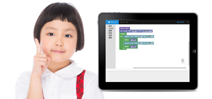
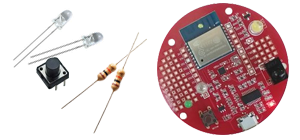

Robip（ロビップ）は、タブレット又はパソコンから、Wifi経由でHaLake（ハレイク）ボードに書き込める新しいプログラミングソフトです。
プログラムをしたら、HaLakeボードが光ったり、動く。おもちゃを買う時代から自分で作る時代へ。
Robipはプログラムの知識が無い方でもすぐ遊べる様に視覚的な操作でプログラミングを作る事ができます。

HaLakeボードはプログラミングソフトRobip（ロビップ）専用の開発ボードです。RobipでLEDのON、OFFをプログラミングしたら、HaLakeボードで実際にLEDがON、OFFされます。
従来の開発ボードとは全く異なり、知識の無い方でもすぐにボードにプログラムを書き込む事が可能です。
ニャンパス株式会社は、埼玉県越谷レイクタウンでコワーキングスペースHaLakeを運営しながら、子供・大人向けプログラミング教室。個人の方や企業様などへの技術支援を行なっております。お気軽におこしください。
また、HaLakeでは、IoT開発に関するご質問も可能です。IoTに関する機器の貸出しも行なっております。詳しくは「コワーキングで始めるIoT開発」のサイトをご覧下さい。